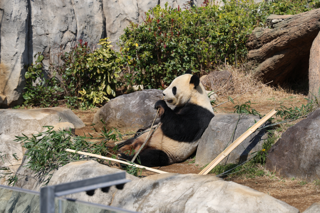

パンダと国際社会
白と黒のかわいらしい見た目で世界中から愛されているパンダ。来日の際には、いつも話題にあがります。ですが実は、日本をはじめとする限られた国でしか飼育されていません。その背景には、中国との国際的な協力があります。 日本ではこれまでに多くのパンダが動物園で暮らしてきましたが、その数や歴史はあまり知られていません。また、世界に目を向けると、G7各国で飼育されているパンダの数にも大きな違いがあります。 この記事では、日本で飼育されたパンダたちを一覧で紹介するとともに、G7各国のパンダ飼育数をグラフで比較します。パンダを通して、動物園の役割や国際交流についても考えてみましょう。
日本
パンダは中国から貸し出される特別な動物で、日本でもこれまでに多くのパンダが飼育されてきました。名前や生まれた場所、来日した時期など、それぞれに異なるストーリーがあります。このページでは、日本で飼育されたパンダたちをカード形式でわかりやすく紹介します。お気に入りのパンダや、知っている名前があるか探してみましょう。
世界
パンダは世界中の動物園で見られるわけではなく、中国との協力によって限られた国だけで飼育されています。では、日本を含むG7の国々では、これまでにどれくらいのパンダが飼育されてきたのでしょうか。このページでは、G7各国のパンダ飼育数をグラフで比較しながら、国ごとの特徴や違いを見ていきます。
パンダと日中関係
本文